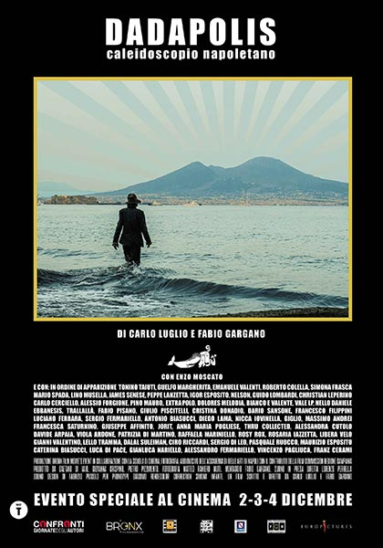

Guelfo ha inoltre interpretato la parte dello psicoanalista nel film di Nina di majo Autunno edito dalla Sacher film di Nanni Moretti nel 1999
Autunno (1999)
Regia di nina di majo Genere Commedia – Italia, 1999 – durata 95 minuti.
Scopri di più Wikipediaegli ha inoltre recitato e commentato nel film Dadapolis(2024)
Dadapolis (2024)
Regia di Carlo Luglio, Fabio Gargano. Con Viviana Cangiano, Cristina Donadio, Peppe Lanzetta, Lino Musella, Dario Sansone. Genere: Documentario – Italia, 2024 – Durata: 72 minuti. Distribuzione: Europictures. Uscita cinema: 2 dicembre 2024.
Scopri di più